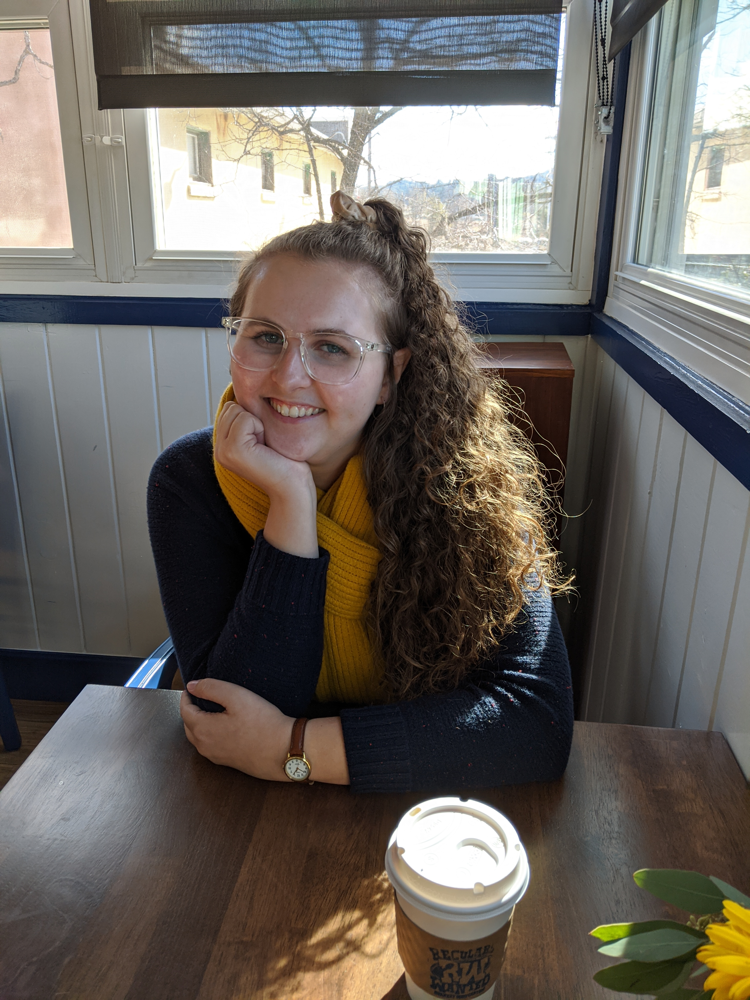

About
Corinne Webb was born in Albany, New York but grew up and resides in San Diego, California. She graduated with a BS in Botany from Humboldt State University in 2017. During her time there, she did paleobotanical research on Psilophyton fossil spores from the Devonian era and afterwards spent a summer doing soil evolution research in the Landscape Evolution Observatory at Biosphere 2 in Tucson, AZ. She has received an M.Ed in Curriculum & Instruction from the University of San Diego.
If you have any questions please view my resume or Send Email